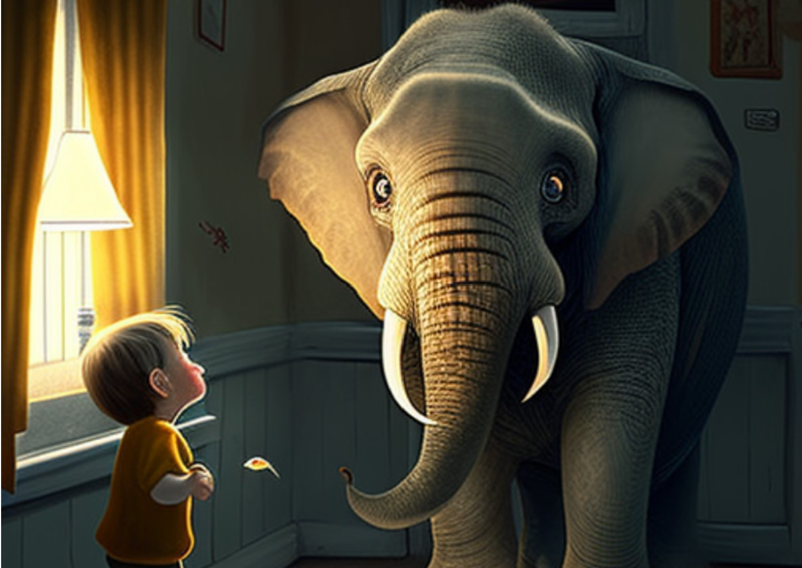
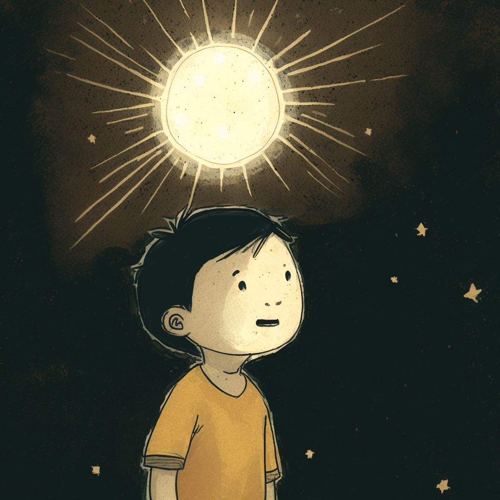
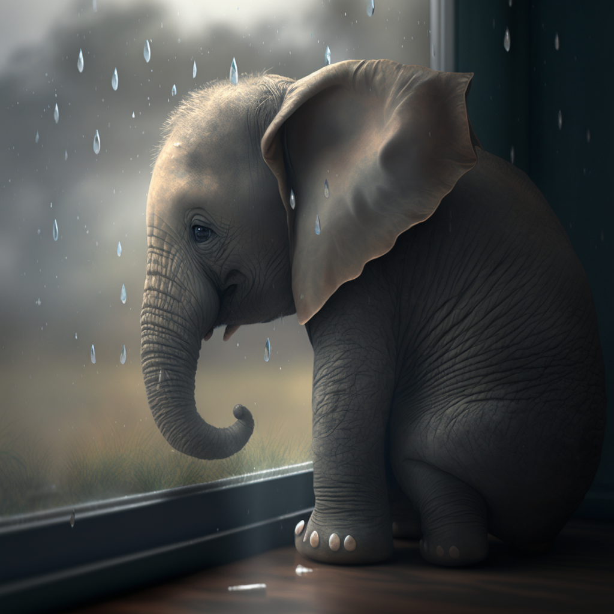

Ed's Yummy Tummy Adventure

Once upon a time, there was a small elephant named Ed. He was a very picky eater. Ed only liked to eat hay and apples. But one day, a new friend came to see Ed. His name was SuperGymnasticHero. He was a strong kid who could do flips, jumps, and all sorts of fun moves.
One sunny day, SuperGymnasticHero saw Ed eating his hay and apples. "Hi, Ed," he said. "Why do you only eat hay and apples? There are so many good foods to try." Ed looked up at SuperGymnasticHero and said, "I am scared to try new foods. What if I do not like them?" SuperGymnasticHero smiled and said, "Do not worry, Ed. I can help you try new foods. It is fun to taste new things. You may find new foods that you like!"
The next day, SuperGymnasticHero brought Ed some new food to try. He showed Ed a red, round fruit. "This is a tomato," he said. Ed took a small bite and liked it. "Yum!" said Ed. "I like tomatoes!" Then, SuperGymnasticHero showed Ed a long, green veggie. "This is a cucumber," he said. Ed took a small bite and liked it too. "Yum!" said Ed. "I like cucumbers!"
Each day, SuperGymnasticHero showed Ed a new food to try. Ed tried carrots, grapes, and even lettuce. Ed found that he liked many new foods. With each new food, Ed felt stronger and happier.
One day, Ed said, "Thank you, SuperGymnasticHero! You helped me try new foods, and now I am not scared to taste new things." SuperGymnasticHero smiled and said, "You are welcome, Ed! It is good to try new things. You never know what you might like!"
From that day on, Ed the Elephant was not a picky eater. He liked to eat all sorts of yummy foods. And with his new friend, SuperGymnasticHero, Ed learned that trying new things can be fun and good for you.
The End.
Sophie's Sleepover
Once upon a time, in a small, cozy house, there lived a little girl named Sophie. Sophie was five years old, and she loved to play with her friends. One sunny day, Sophie's mom said, "Sophie, you can invite your friends for a sleepover tonight!"
Sophie was very excited. She called her friends Lily, Max, and Mia. They all said, "Yes! We'd love to come!"
Later that day, the friends arrived at Sophie's house. They all hugged and laughed, happy to be together. Sophie's mom made yummy snacks for everyone. They ate cheese, crackers, and grapes. "Yum!" said Sophie, as they all enjoyed the food.
After they finished eating, they went to the living room to play. Sophie had a big box of toys, and they picked their favorites. Lily liked the soft teddy bear, Max picked the cool race car, and Mia chose the colorful blocks. They played for hours, laughing and having fun.
When it was time for dinner, Sophie's mom made pizza. "My favorite!" shouted Max. They all sat around the table, eating and talking about their day.
After dinner, it was time for a movie. Sophie's mom turned on a funny cartoon. The friends snuggled under a big, warm blanket and giggled at the silly jokes.
As the night grew darker, Sophie's mom said, "It's time to get ready for bed." The friends put on their pajamas and brushed their teeth. Sophie's mom gave each of them a cozy sleeping bag.
Before they went to sleep, Sophie's mom read them a bedtime story. The friends listened quietly, their eyes growing heavy. As the story ended, they all whispered, "Goodnight."
Sophie and her friends slept soundly, dreaming of more fun times together. The sleepover was a big success, and they couldn't wait for the next one. And so, Sophie and her friends lived happily, sharing many more sleepovers and adventures.
The end.
The Little Star

Once upon a time, high in the night sky, there was a little star named Twinkle. Twinkle lived with many big, bright stars. She was the smallest star, and sometimes she felt sad.
Every night, the stars lit up the sky. Twinkle tried to shine like the others, but her light was very tiny.
One night, Twinkle looked down at Earth and saw a little boy named Tim. Tim played alone in his yard, feeling sad. He wanted to play soccer with his friends but didn't think he was fast or strong enough.
Twinkle wanted to help Tim. She tried to shine brighter to catch his eye.
Tim looked up and saw Twinkle. She was small, but she shone with all her might. Tim thought, "If that little star can shine so bright, maybe I can be fast and strong enough to play soccer with my friends."
Every night, Twinkle shone for Tim. And every day, Tim practiced soccer, knowing the little star believed in him.
One day, Tim felt brave enough to join his friends. He played his best. His friends were amazed and said, "Great job, Tim!"
That night, as Twinkle shone, something magical happened. She shone brighter than ever. The other stars smiled. They knew that even though Twinkle was small, her light was full of love.
From then on, Twinkle knew it didn't matter how big or bright she was. What mattered was the love and help she could give others.
And so, Twinkle and Tim learned to believe in themselves. They knew that even the smallest star or the tiniest person could make a big difference in the world.
The end.
Ed and the Garden Surprise
One sunny day, Ed the Elephant and his friend, SuperGymnasticHero, were playing in the big zoo. Ed loved to play with his friend, and he was learning many new things. Today, SuperGymnasticHero had a new plan for Ed.
"Ed," said SuperGymnasticHero, "I want to show you the magic of nature. Let's plant a garden!"
Ed was excited. "A garden?" he asked. "What do we do?"
SuperGymnasticHero smiled. "First, we need seeds," he said. They found seeds for flowers, fruits, and veggies. They dug small holes and put the seeds in the ground.
Next, SuperGymnasticHero showed Ed how to water the seeds. "Water helps the seeds grow," he said. Ed liked to help, so he splashed water on the seeds.
As days went by, Ed and SuperGymnasticHero visited the garden. They watered the seeds and pulled out the weeds. Ed was learning how to care for the plants.
One day, Ed saw a small green shoot. "Look!" he said. "The seeds are growing!" SuperGymnasticHero smiled. "Yes, Ed! That is the magic of nature."
Soon, the garden was full of color. There were red tomatoes, orange carrots, and green peas. There were flowers in all colors too. Ed was amazed by the beauty of the garden.
"SuperGymnasticHero," said Ed, "I love our garden. But why is it important to care for nature?"
SuperGymnasticHero looked at Ed and said, "Nature gives us food, clean air, and a home for many animals. When we care for nature, we care for ourselves and our friends."
Ed nodded. "I see," he said. "I will help care for nature, too."
Together, Ed the Elephant and SuperGymnasticHero cared for their garden. They shared the fruits and veggies with their friends at the zoo. Ed learned that caring for nature is fun and important.
The End.
Ed and the Rainy Day Fun

One cloudy day, Ed the Elephant and his friend, SuperGymnasticHero, were playing in the big zoo. They loved to play together and learn new things. This day, a new friend came to the zoo. Her name was Bella the Bunny, and she loved to hop and play too.
As they played, the sky grew dark, and rain started to fall. Ed felt sad. "Oh no!" he said. "Now we can't play outside."
SuperGymnasticHero smiled and said, "Ed, do not worry. We can still have fun, even on a rainy day."
Bella the Bunny hopped over and said, "Yes, Ed! Let's make up a fun game to play inside."
Ed thought for a moment and then said, "How about we play a game of hide and seek?"
SuperGymnasticHero and Bella agreed. They took turns hiding and seeking. Ed found that playing inside was just as fun as playing outside.
When the rain stopped, they went back outside to play. Ed noticed that the flowers in their garden looked brighter, and the grass was greener. "Wow!" said Ed. "The rain made our garden even more beautiful!"
SuperGymnasticHero nodded and said, "You see, Ed? Even when things seem bad, like rain on a play day, good things can come from it."
Bella added, "That's right! When we face hard times, we can learn and grow from them."
Ed smiled and said, "Thank you, SuperGymnasticHero and Bella. Now I know that even when things are tough, we can find a way to have fun and learn from it."
Together, Ed the Elephant, SuperGymnasticHero, and Bella the Bunny learned to have fun, no matter what the day brought. They knew that facing adversity could lead to new and exciting experiences.
The End.